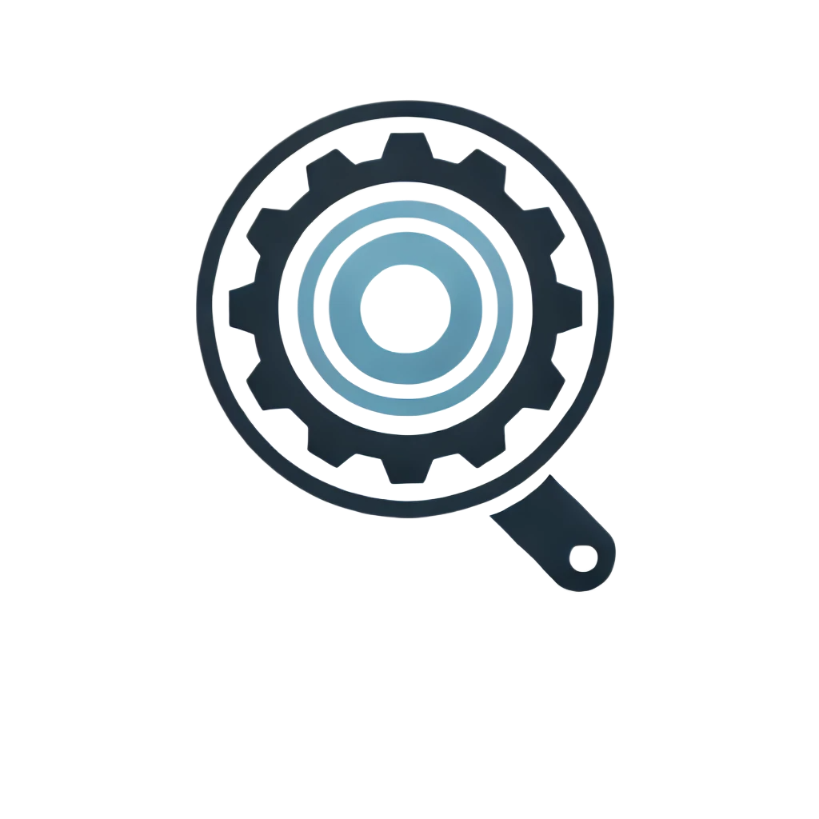

Review Flagged Scans
Review scans flagged for potential issues.
{% if review_data %}
{% else %}
| File/URL | Type | Status | Details |
|---|---|---|---|
| {{ entry.path }} | {{ entry.scan_type }} | {{ entry.status }} | |
Details:{{ entry.details }}
|
|||
No flagged scans for review.
{% endif %}